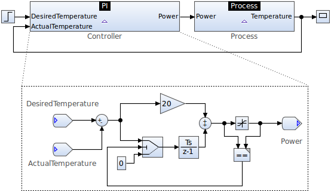
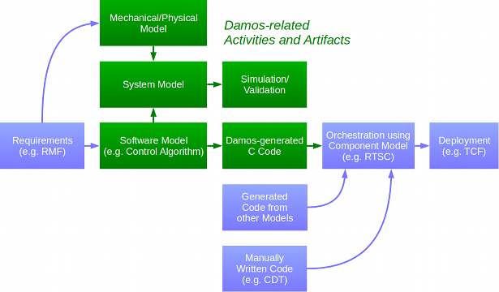
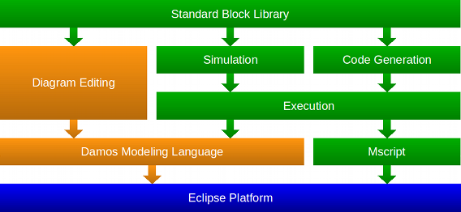
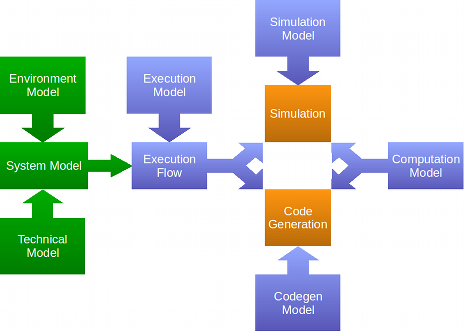
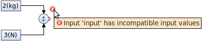
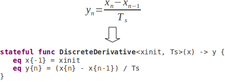
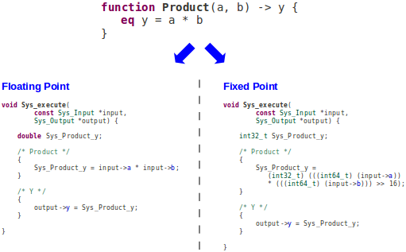

The Damos project is a proposed open source project under the Tools project.
This proposal is in the Project Proposal Phase (as defined in the Eclipse Development Process) and is written to declare its intent and scope. We solicit additional participation and input from the Eclipse community. Please send all feedback to the Eclipse Proposals Forum.
In the field of science and engineering, a data flow-oriented approach is commonly used for analyzing and designing systems. On the one hand it allows scientists and engineers to focus on the data processing aspects of a system, and on the other hand it provides a means to specify the dynamics of the mechanical components and the physical environment of the system to facilitate close-to-real-world system simulation.
Since many scientists and engineers already use Eclipse for software development, it would be beneficial to perform system design, simulation, and code generation in Eclipse rather than using an external tool like MATLAB/Simulink, Scicos, or LabVIEW.
This project will provide a development environment for analyzing and designing systems using a data flow-oriented approach. Such systems are specified using block diagrams, which contain the software components (e.g. control algorithm) that will later be executed on a target device (e.g. digital controller) and the mechanical components as well as the physical environment to allow for system simulation. The mechanical and physical components of the system can be represented as a dynamical system, which is specified by providing the transfer function of the corresponding linear time-invariant (LTI) system.

Even though data flow-oriented design is not bound to a specific domain, it is most commonly used in control systems engineering and digital signal processing.
Currently, Eclipse does not provide tool support for designing data flow-oriented systems. Engineers and scientists are forced to use tools which do not integrate very well with other Eclipse technologies. Furthermore, due to the closed source nature of commercial tools, it is difficult to customize and extend these tools for better integration with other Eclipse technologies.
This project will benefit from being hosted at Eclipse due to the broader visibility, and better integration and coordination with other Eclipse-based technologies such as EMF, RMF, CDT, RTSC, TMC, and other tools like Papyrus, eTrice, and Koneki. Because of the perceived higher reliability in terms of long-term support, it is expected to attract more interest and participation from other parties. This will lead to greater market penetration, while improving quality and reducing development costs.
The following diagram shows how Damos can be integrated into a development workflow using other Eclipse-based technologies. The green boxes represent the Damos-related activities and artifacts, whereas the blue boxes denote existing Eclipse-based tools and frameworks.

The initial contribution consists of sources found in the current Damos repository at EclipseLabs, which include:
In order to facilitate customization, Damos is split into a set of top-level components (i.e. Eclipse features). There are two main groups of components. The first group contains components providing the structural semantics and the diagram editing features (orange). The second group provides simulation and code generation components as well as the standard block library (green). This enables other projects to build their own data flow-oriented languages by reusing the structural semantics and the diagram editing components, without being required to include unnecessary components.

EMF-based models are used to specify the semantics of data flow-oriented systems. This enables users to perform model analysis and transformation using well-known Eclipse modeling technologies.
System models are comprised of models describing the mechanical components and the physical environment of a device, and the software model that later will be executed on the device. These models are specified using block diagrams.
When performing model simulation or code generation, an execution flow is first derived from the system model. The execution flow can be seen as the imperative representation of the system model. For instance, it describes the execution order of the components so that components that drive other components are executed first. This information is later used by the simulator and the code generator to execute and to generate the components in the right order, respectively.
Simulation and code generation can be configured using a Damos-specific configuration language. Such configurations contain global properties and properties for individual Damos model elements (using an annotation mechanism). Configurations can extend and/or override other configurations, so that, for instance, properties that are common to simulation and code generation can be extracted to a base configuration.
To configure computation-related aspects (e.g. fixed-point arithmetic operations), computation models can be specified in the configuration for individual model elements (e.g.components and subsystems). Since Damos models only utilize logical numeric data types (e.g. real and integer), computation models are used to map the logical data types to machine data types (e.g. double). The computation models are incorporated by both the simulation environment and the code generators to ensure that the simulation results match the behavior of the generated code.
Damos provides a GMF-based graphical block diagram editor for the system model. For all other models, textual model editors based on Xtext are provided.

The graphical block diagram editor is used for editing system models. It can also be used to visualize real-time simulation results using virtual instruments. Virtual instruments display simulation results in real-time, or provide a means to interact with the running simulation (e.g. using buttons and sliders).
Block diagram files contain two model types: the semantic model of the system and the notation model containing the graphical information of the block diagram. When processing block diagrams (i.e. simulation and code generation), the notation model is ignored.
While editing block diagrams, the model is continuously validated. Validation errors are shown as annotations on invalid model elements. For instance, when using units of measurement for numeric values, the compatibility of block inputs and outputs are checked based of their corresponding units.

Mscript is a declarative programming language where the user defines the relationship between the inputs and outputs of a function using a set of equations. In contrast to functional languages, Mscript functions can be stateful. Consequently, such functions must be instantiated (function objects). Stateful function equations can reference input and output values from previous steps, which enable the specification of difference equations. Difference equations are widely used to specify discrete transfer functions, for instance in the field of digital signal processing (e.g. FIR and IIR filters). In future versions, differential equations may be supported as well to allow for specifying time-continuous blocks.

The simulator utilizes adaptive and fixed step size solvers to simulate time-continuous, synchronous, and asynchronous systems. Solvers encapsulate the numerical integration algorithm to solve the differential equations that represent the system.
When real-time simulation is performed, simulation results can be displayed in real-time using virtual instrument blocks. The simulation engine incorporates a target-specific computation model, so that—for instance—overflows can be detected when using fixed-point arithmetic. Simulation aspects (e.g. solver configuration) can be configured using a simulation configuration model.
The code generation tooling initially includes a C code generator. Other languages may be added in the future. Each system component can provide its own code generator. When using Mscript to describe the block behavior, an Mscript-specific code generator is used that transforms the Mscript functions into C code. The code generators incorporate a target-specific computation model containing information on how arithmetic operations should be handled. The code generation process can be configured using a generator configuration model (e.g. target directories).

The standard block library contains commonly used blocks. If required, the user can create his/her own block libraries. The block behavior can be specified using the declarative programming language Mscript, which is part of this project.
The Eclipse extension mechanism can be used to customize and extend various aspects of the tooling, e.g:
The following individuals are proposed as initial committers to the project:
We welcome additional committers and contributions.
The following Architecture Council members will mentor this project:
The following individuals, organisations, companies and projects have expressed interest in this project:
| Date | Change |
|---|---|
| DD-Month-YYYY | Document created |
{kind=link}